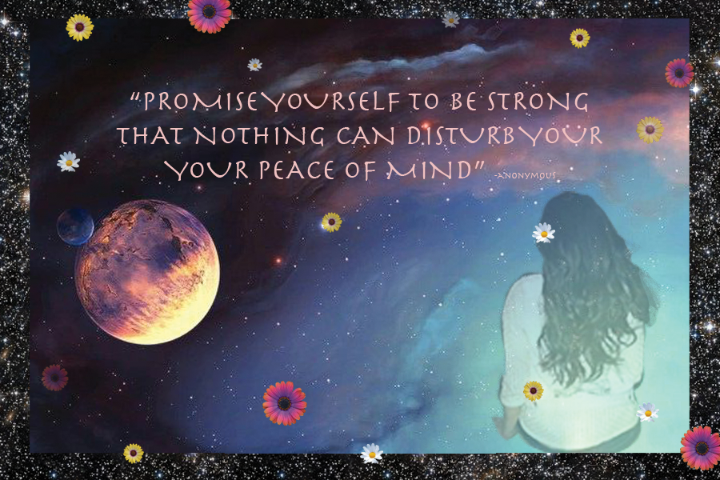

Home | Raster | Vector | TimeBaseMedia | PrintLayout | Contact |
The concept that I was going for was peace and gazing into the universe. I incorporated daisies as stars. The quote was to match with not letting anything around disturb your inner peace. It is always good to take a step back to collect yourself and move forward.